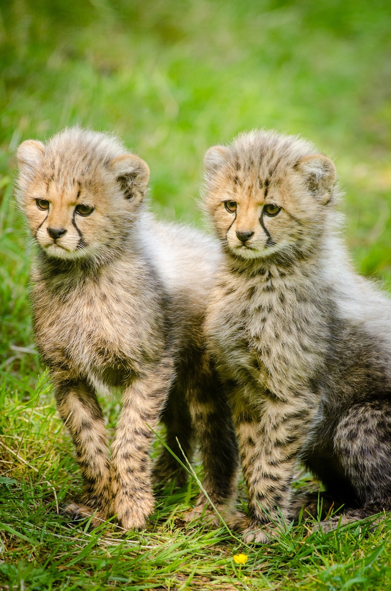
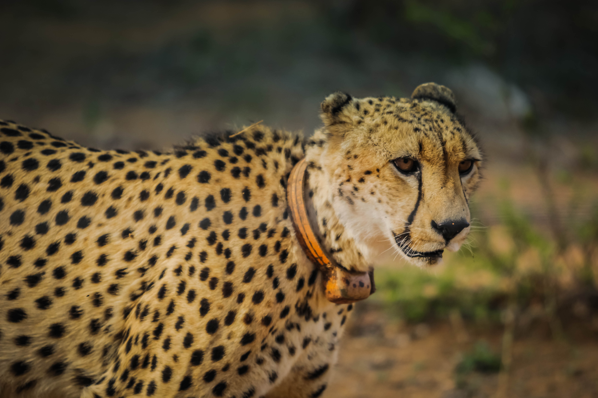

Cheetahs
I have other articles about animals. You can look at it if you want.The cheetah (Acinonyx jubatus) is a large cat native to Africa and central Iran. It is the fastest land animal, capable of running at 80 to 128 km/h (50 to 80 mph), and as such has several adaptations for speed, including a light build, long thin legs and a long tail.
Cheetahs typically reach 67–94 cm (26–37 in) at the shoulder, and the head-and-body length is between 1.1 and 1.5 m (3.6 and 4.9 ft). Adults typically weigh between 20 and 65 kg (44 and 143 lb). Its head is small, rounded, and has a short snout and black tear-like facial streaks. The coat is typically tawny to creamy white or pale buff and is mostly covered with evenly spaced, solid black spots. Four subspecies are recognised.
The cheetah occurs in a variety of habitats such as savannahs in the Serengeti, arid mountain ranges in the Sahara and hilly desert terrain in Iran. The cheetah is threatened by several factors such as habitat loss, conflict with humans, poaching and high susceptibility to diseases. Earlier ranging throughout most of Sub-Saharan Africa and extending eastward into the Middle East up to the Indian subcontinent, the cheetah is now distributed mainly in small, fragmented populations in central Iran and southern, eastern and northwestern Africa.
More gregarious than many other cats, the cheetah has three main social groups—females and their cubs, male 'coalitions' and solitary males. While females lead a nomadic life searching for prey in large home ranges, males are more sedentary and may instead establish much smaller territories in areas with plentiful prey and access to females. The cheetah is active mainly during the day and hunting is its major preoccupation, with peaks during dawn and dusk.
It feeds on small- to medium-sized prey, mostly weighing under 40 kg (88 lb), and prefers medium-sized ungulates such as impala, springbok and Thomson's gazelles. The cheetah will typically stalk its prey to within 60–70 m (200–230 ft), charge towards it, trip it during the chase and bite its throat to suffocate it to death. Breeding occurs throughout the year; after a gestation of nearly three months a litter of typically three to five cubs is born; cheetah cubs are highly vulnerable to predation by other large carnivores such as hyenas and lions. Weaning happens at around four months, and cubs are independent by around 20 months of age.
In 2016, the global cheetah population was estimated at around 7,100 individuals in the wild; it is listed as Vulnerable on the IUCN Red List. In the past, cheetahs used to be tamed and trained for hunting ungulates. They have been widely depicted in art, literature, advertising, and animation.
The cheetah's closest relatives are the cougar (Puma concolor) and the jaguarundi (Herpailurus yagouaroundi).[20] Together, these three species form the Puma lineage, one of the eight lineages of the extant felids; the Puma lineage diverged from the rest 6.7 mya. The sister group of the Puma lineage is a clade of smaller Old World cats that includes the genera Felis, Otocolobus and Prionailurus.[31]
The oldest cheetah fossils, excavated in eastern and southern Africa, date to 3.5–3 mya; the earliest known specimen from South Africa is from the lowermost deposits of the Silderberg Grotto (Sterkfontein).[3][9] Though incomplete, these fossils indicate forms larger but less cursorial than the modern cheetah.[32] Fossil remains from Europe are limited to a few Middle Pleistocene specimens from Hundsheim (Austria) and Mosbach Sands (Germany).[33] Cheetah-like cats are known from as late as 10,000 years ago from the Old World. The giant cheetah (A. pardinensis), significantly larger and slower compared to the modern cheetah, occurred in Eurasia and eastern and southern Africa in the Villafranchian period roughly 3.8–1.9 mya.[15][34] In the Middle Pleistocene a smaller cheetah, A. intermedius, ranged from Europe to China.[3] The modern cheetah appeared in Africa around 1.9 mya; its fossil record is restricted to Africa.[32]
Extinct North American cheetah-like cats had historically been classified in Felis, Puma or Acinonyx; two such species, F. studeri and F. trumani, were considered to be closer to the puma than the cheetah, despite their close similarities to the latter. Noting this, palaeontologist Daniel Adams proposed Miracinonyx, a new subgenus under Acinonyx, in 1979 for the North American cheetah-like cats;[35] this was later elevated to genus rank.[36] Adams pointed out that North American and Old World cheetah-like cats may have had a common ancestor, and Acinonyx might have originated in North America instead of Eurasia.[35] However, subsequent research has shown that Miracinonyx is phylogenetically closer to the cougar than the cheetah;[37] the similarities to cheetahs have been attributed to convergent evolution.[31]
The three species of the Puma lineage may have had a common ancestor during the Miocene (roughly 8.25 mya).[35][38] Some suggest that North American cheetahs possibly migrated to Asia via the Bering Strait, then dispersed southward to Africa through Eurasia at least 100,000 years ago;[39][40][41] some authors have expressed doubt over the occurrence of cheetah-like cats in North America, and instead suppose the modern cheetah to have evolved from Asian populations that eventually spread to Africa.[37][42] The cheetah is thought to have experienced two population bottlenecks that greatly decreased the genetic variability in populations; one occurred about 100,000 years ago that has been correlated to migration from North America to Asia, and the second 10,000–12,000 years ago in Africa, possibly as part of the Late Pleistocene extinction event.[40][43][44]
